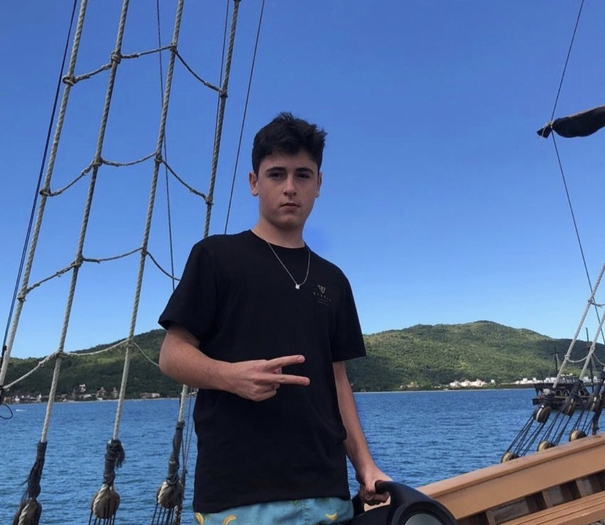
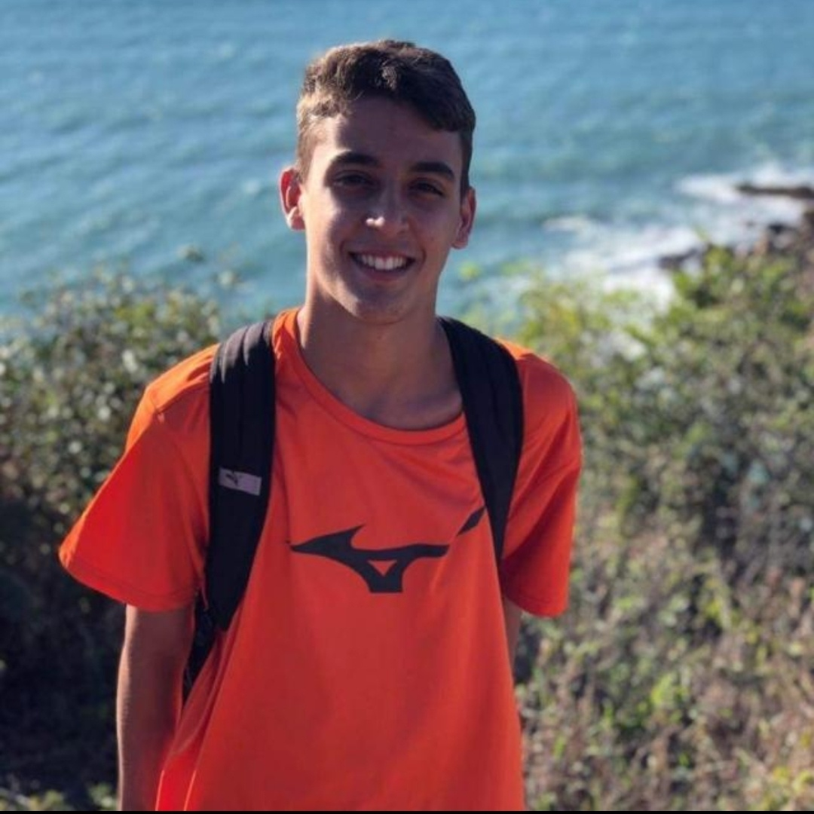
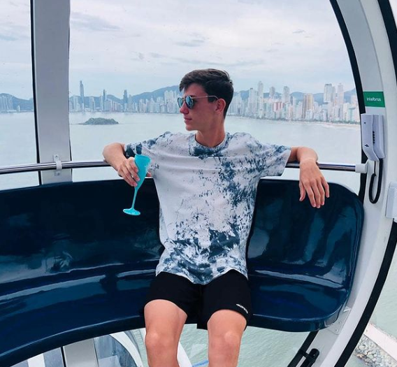

Quem somos Nós?
Nicolas Vieira de Souza - Foi responsável pesquisa, criação da pagina das leis da termodinâmica e ajuda do designe da pagina inicial

Gabriel Mascia - Foi responsável pela descrição da equipe, layou da pesquisa e desing da página

João Salvador Rizzo - Foi responsável pelo criação e desing do site
